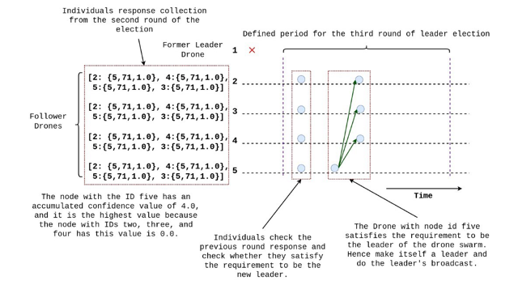
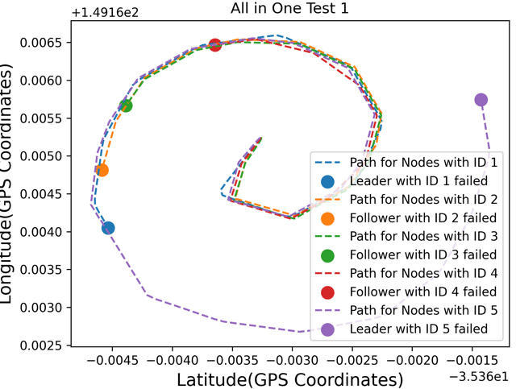
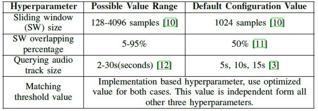
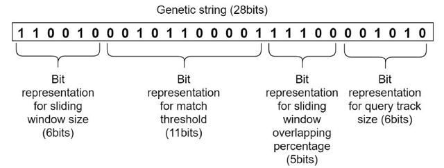

Portfolio
The following section will present the research project I engaged with, publications I contributed to, the teaching and mentoring experience I gained via different projects and opportunities, and other miscellaneous projects I worked and working on.
- This was a one-year-long thesis-based research I conducted during my last year of undergraduate under the supervision of Prof. Prasad Wimalarathne and Dr. Kasun Karunanayaka.
-
The primary goal of this research is to provide a solution to the single
point of failure problem
attached to the single leader, leader-follower drone swarms. So, I proposed
a solution, using the distributed
leader election concept with the incorporation of the capability aware
measurements.
 A step in the proposed algorithm
-
The proposed algorithm was verified via a series of simulation experiments
conducted on the SITL drone
simulation environments.
 Result of a simulation test case
- The implementation of the proposed algorithm using Python3 and DroneKit API can be found in this link.
-
The following papers are published based on this research,
- Thesis: Click hear
- Research paper published at IEEE IES ONCON23: 10.1109/ONCON60463.2023.10431018
- A review paper accepted to IEEE ISIE24.
- Working on the journal paper.
-
This research study primarily focused on optimizing the content-based audio
fingerprinting algorithm hyperparameter to improve the algorithm's overall
performance.
 Optimized parameter list
-
I incorporated the CHC genetic algorithm, encoded the hyperparameters into a
genetic string, and optimized it with the penalty approach to avoid
overfitting
cases such as long query length.
 Encoded genetic string
- The experiments and the research approach helped me to understand the conversion process of real-world problems to a genetic algorithm optimizable problem and different methods for audio fingerprinting, including the Shazam algorithm and the state-of-the-art deep learning-based algorithms.
- Python3 implementation for the developed optimization algorithm can be found in this link.